This model estimates the selecitvity of different gears from experimental catches.
Arguments
- param
A list with following parameters: vector with midlengths of size classes (
midLengths), vector with meshSizes in increasing order (meshSizes), and a matrix with the number of individuals caught with each sized mesh (CatchPerNet_mat).- x0
A string of initial values for the parameters to be optimized over when applying the function
optim. When rtype = "norm.loc", "norm.sca", or "lognorm", initial values may be ommitted (x0 = NULL), and starting vallues will be estimated using the earlier approach of Millar and Holst (1997).- rtype
A character string indicating which method for estimating selection curves should be used:
"norm.loc"for a normal curve with common spread,"norm.sca"for a normal curve with variable spread,"lognorm"for a lognormal curve,"binorm.sca"for a bi-normal curve,"bilognorm"for a bi-lognormal curve,"tt.logistic"for a control and logistic curve,"gamma"for a gamma curve- rel.power
A string indicating the relative power of different meshSizes, must have same length as
meshSizes(Default:rel.power = NULL).- plot
logical; should a plot be printed?
Details
Model adapted from the selectivity functions provided by Prof. Dr. Russell Millar
(https://www.stat.auckland.ac.nz/~millar/). In the deviance plot open circles correspond to negative,
closed to positive residuals. The size of the circles is proportional to the square of the residuals.
To assess the model fit by the deviance plot it requires some experience, in general the pattern should
be random and the sizes not too big. Please refer to Millar's publications and other publications for
comparison. The model can produce errors if the starting values (x0) for the optim
function are not realistic. Please be aware that if the method is changed the outcoming parameters
can greatly vary. Simliarly the starting values have to be adapted when changing the method (rtype).
The parameters in par are on the internal scale of the model:
mode and standard deviation for the first mesh size ("norm.loc",
"norm.sca", "binorm.sca"), mean and standard deviation of
the log length ("lognorm", "bilognorm"), intercept and slope
of the logistic curve ("tt.logistic"), shape and scale per unit mesh
size ("gamma"), and the logit of the proportions (p). This is also
the scale of the starting values (x0). estimates contains the
parameters on the usual scale (mode and standard deviation for the first
mesh size, p; L50 and selection range for "tt.logistic") with
their standard errors. Use predict.select_Millar to calculate
the retention of the fitted model for any lengths and mesh sizes, and
select_Millar_curve for the retention of given (e.g.
published) parameters.
References
Millar, R. B., Holst, R., 1997. Estimation of gillnet and hook selectivity using log-linear models. ICES Journal of Marine Science: Journal du Conseil, 54(3):471-477
Holt, S. J. 1963. A method for determining gear selectivity and its application. ICNAF Special Publication, 5: 106-115.
Examples
data(haddock)
output <- select_Millar(haddock, x0 = c(-10,0.3,0),
rtype = "tt.logistic")
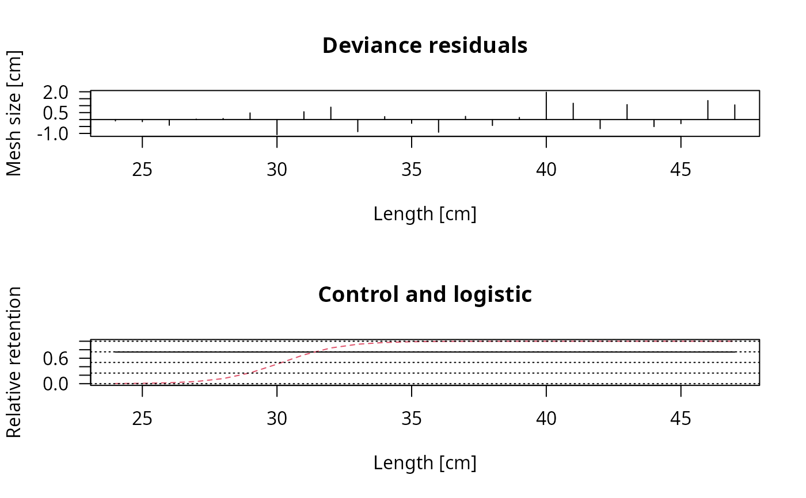
plot(output, plotlens=seq(25,35,0.1), deviance_plot = FALSE)
legend("topleft",c("Control","Experimental"), lty=1:2, col=1:2)
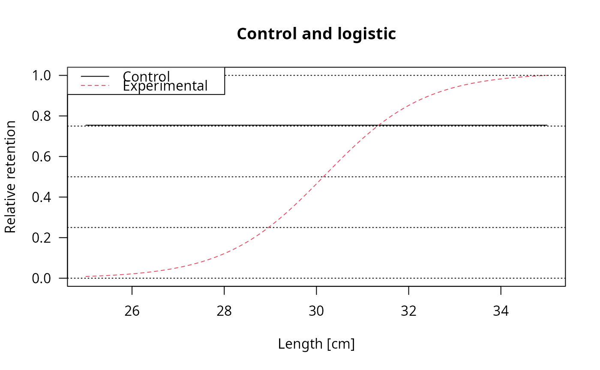
# Gillnet
data(gillnet)
# Using inital estimates from old method
select_Millar(gillnet, x0 = NULL, rtype = "norm.loc")$value
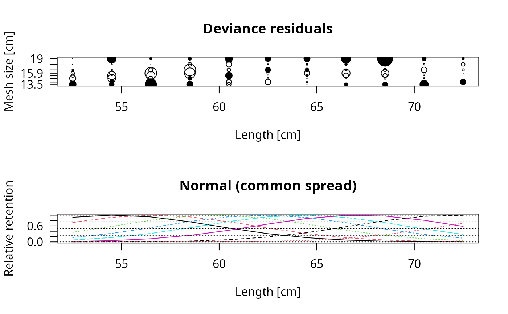
#> [1] 11215.58
select_Millar(gillnet, x0 = NULL, rtype = "norm.sca")$value
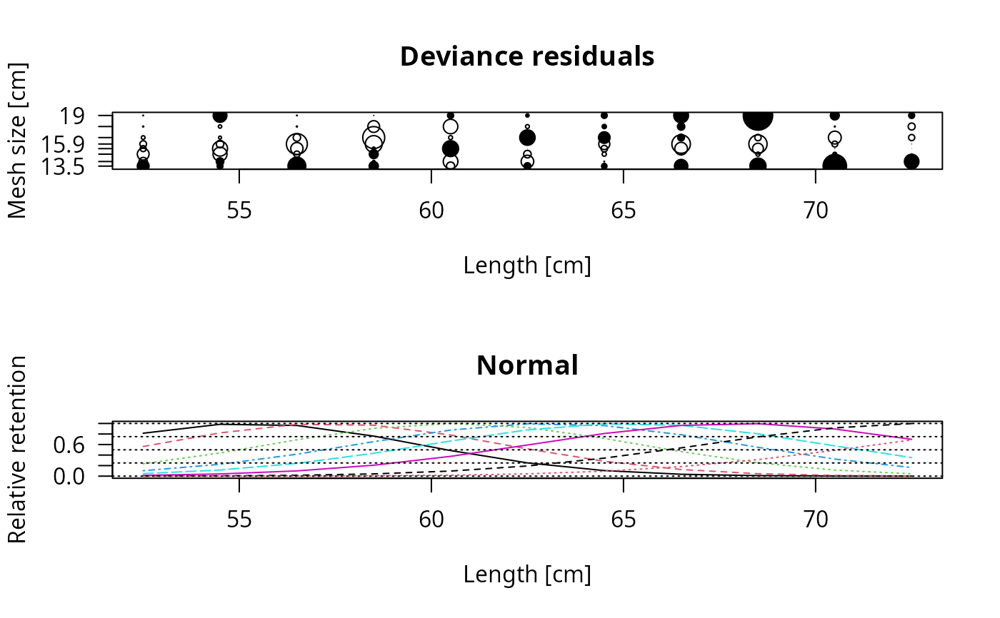
#> [1] 11170.5
select_Millar(gillnet, x0 = NULL, rtype = "lognorm")$value
 #> [1] 11136.26
# Two rtypes which require starting values
select_Millar(gillnet, x0 = c(55,4,65,4,3), rtype="binorm.sca")
#> [1] 11136.26
# Two rtypes which require starting values
select_Millar(gillnet, x0 = c(55,4,65,4,3), rtype="binorm.sca")
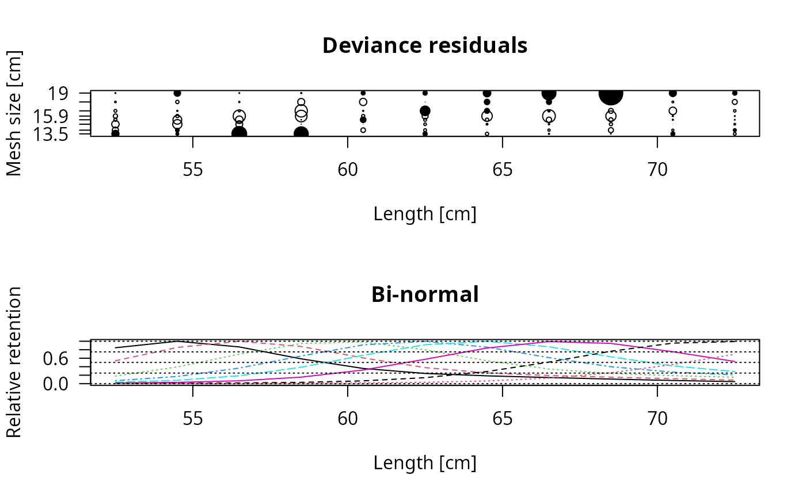
#> $midLengths
#> [1] 52.5 54.5 56.5 58.5 60.5 62.5 64.5 66.5 68.5 70.5 72.5
#>
#> $meshSizes
#> [1] 13.5 14.0 14.8 15.4 15.9 16.6 17.8 19.0
#>
#> $CatchPerNet_mat
#> [,1] [,2] [,3] [,4] [,5] [,6] [,7] [,8]
#> [1,] 52 11 1 1 0 0 0 0
#> [2,] 102 91 16 4 4 2 0 3
#> [3,] 295 232 131 61 17 13 3 1
#> [4,] 309 318 362 243 95 26 4 3
#> [5,] 118 173 326 342 199 100 10 11
#> [6,] 79 87 191 239 202 201 39 15
#> [7,] 27 48 111 143 133 185 72 25
#> [8,] 14 17 44 51 52 122 74 41
#> [9,] 8 6 14 23 25 59 65 76
#> [10,] 7 3 8 14 15 16 34 33
#> [11,] 0 3 1 2 5 4 6 15
#>
#> $par
#> [1] 54.323571 3.278020 59.807472 7.325698 1.339119
#>
#> $value
#> [1] 11059.37
#>
#> $counts
#> function gradient
#> 502 NA
#>
#> $convergence
#> [1] 1
#>
#> $message
#> NULL
#>
#> $hessian
#> [,1] [,2] [,3] [,4] [,5]
#> [1,] 232.09347 -96.17580 17.035661 -28.867902 -58.486396
#> [2,] -96.17580 268.15653 -16.220889 32.726570 -92.556179
#> [3,] 17.03566 -16.22089 6.437706 -8.281554 -6.870236
#> [4,] -28.86790 32.72657 -8.281554 21.325272 -23.487064
#> [5,] -58.48640 -92.55618 -6.870236 -23.487064 180.188864
#>
#> $deviance
#> function (object, ...)
#> UseMethod("deviance")
#> <bytecode: 0x6093ee96f2e0>
#> <environment: namespace:stats>
#>
#> $rtype
#> [1] "binorm.sca"
#>
#> $rel.power
#> [1] 1 1 1 1 1 1 1 1
#>
#> $Dev.resids
#> [,1] [,2] [,3] [,4] [,5] [,6]
#> [1,] 3.1524391 -2.3466445 -2.8108814 -1.19908010 -1.6416738 -1.1010611
#> [2,] 1.5323430 1.8411524 -3.5119005 -3.34615667 -1.2431994 -0.4663512
#> [3,] 6.0250577 -0.1818255 -2.6285411 -2.87575787 -4.6327295 -0.7873194
#> [4,] 5.7767697 -0.5006038 0.4718943 -0.03571701 -4.4146653 -4.6688366
#> [5,] 0.1401483 -1.7692146 0.3575580 2.55950825 -1.2248753 -0.4655460
#> [6,] 2.0408252 -1.1059023 -1.0558681 -1.15469320 -2.3043584 4.1032852
#> [7,] -1.2625374 0.1661943 1.1105286 -1.28690587 -3.9835553 2.3192825
#> [8,] -0.4634281 -0.9222724 0.9902983 -2.04515979 -4.8349605 1.2862669
#> [9,] -0.1760431 -1.9346301 -1.2131094 -1.58373365 -3.8948385 -1.8861554
#> [10,] 1.9475920 -0.8474169 0.1459995 0.88561742 -0.4550723 -2.8517991
#> [11,] -1.0836026 1.5880977 -0.6716172 -0.32846775 0.7868796 -0.9868420
#> [,7] [,8]
#> [1,] -0.6387965 -0.3867040
#> [2,] -1.2817899 2.8888162
#> [3,] -0.4984114 -0.3683655
#> [4,] -2.6675328 -0.4405384
#> [5,] -2.7737420 1.9344458
#> [6,] 0.4011796 2.0492829
#> [7,] 2.4882952 3.3066163
#> [8,] 2.3527446 5.7226968
#> [9,] 0.6150381 9.4636139
#> [10,] -0.7273079 3.1092137
#> [11,] -1.9103282 2.0688158
#>
#> $selection_ogive_mat
#> Length 13.5 14 14.8 15.4 15.9 16.6
#> [1,] 52.5 0.80501771 0.51391280 0.1706424 0.06745457 0.03342761 0.01503676
#> [2,] 54.5 0.95091906 0.81204625 0.3750070 0.16168890 0.07653556 0.02978049
#> [3,] 56.5 0.82314310 0.95085703 0.6618921 0.34950372 0.17752318 0.06499816
#> [4,] 58.5 0.55628162 0.83345925 0.8999424 0.62075937 0.36894296 0.14671383
#> [5,] 60.5 0.34100575 0.57766700 0.9355857 0.86894954 0.63462837 0.30658976
#> [6,] 62.5 0.22940270 0.36030517 0.7593693 0.94862310 0.87210677 0.54675243
#> [7,] 64.5 0.17553847 0.24119756 0.5132374 0.81816555 0.94906242 0.79899252
#> [8,] 66.5 0.13760668 0.18361671 0.3286779 0.58356448 0.82753924 0.94317675
#> [9,] 68.5 0.10277695 0.14568489 0.2300231 0.37994454 0.60188804 0.90231195
#> [10,] 70.5 0.07157392 0.11155077 0.1796182 0.25881336 0.39811903 0.71582689
#> [11,] 72.5 0.04628992 0.08023588 0.1442611 0.19720514 0.27127035 0.49757778
#> 17.8 19
#> [1,] 0.005061236 0.001854765
#> [2,] 0.008948484 0.003310710
#> [3,] 0.015989289 0.005730395
#> [4,] 0.030402075 0.009759185
#> [5,] 0.062949174 0.016880027
#> [6,] 0.134747375 0.030957894
#> [7,] 0.272286992 0.061215201
#> [8,] 0.483716104 0.125013155
#> [9,] 0.726789403 0.244550345
#> [10,] 0.908696457 0.430594111
#> [11,] 0.943548869 0.658045517
#>
#> $out
#> [,1]
#> null.l 22981.3847
#> model.l 25091.1229
#> full.l 25366.3699
#> Deviance 550.4941
#> Pearson.chisq 630.9630
#> d.o.f. 72.0000
#>
#> $estimates
#> par s.e.
#> Mode1(mesh1) 54.3235714 0.13798557
#> Std dev.1(mesh1) 3.2780203 0.13355660
#> Mode2(mesh1) 59.8074724 1.32748734
#> Std dev.2(mesh1) 7.3256977 0.79623248
#> P(mode1) 0.7923451 0.04245935
#>
#> attr(,"class")
#> [1] "select_Millar"
select_Millar(gillnet, x0 = c(4,0.2,4.2,0.1,2), rtype="bilognorm")
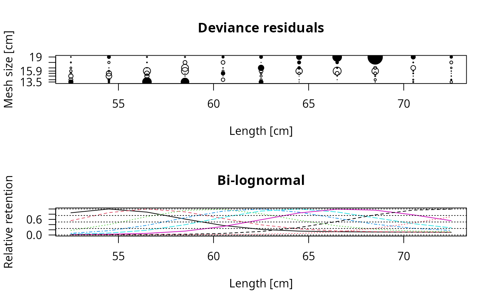
#> $midLengths
#> [1] 52.5 54.5 56.5 58.5 60.5 62.5 64.5 66.5 68.5 70.5 72.5
#>
#> $meshSizes
#> [1] 13.5 14.0 14.8 15.4 15.9 16.6 17.8 19.0
#>
#> $CatchPerNet_mat
#> [,1] [,2] [,3] [,4] [,5] [,6] [,7] [,8]
#> [1,] 52 11 1 1 0 0 0 0
#> [2,] 102 91 16 4 4 2 0 3
#> [3,] 295 232 131 61 17 13 3 1
#> [4,] 309 318 362 243 95 26 4 3
#> [5,] 118 173 326 342 199 100 10 11
#> [6,] 79 87 191 239 202 201 39 15
#> [7,] 27 48 111 143 133 185 72 25
#> [8,] 14 17 44 51 52 122 74 41
#> [9,] 8 6 14 23 25 59 65 76
#> [10,] 7 3 8 14 15 16 34 33
#> [11,] 0 3 1 2 5 4 6 15
#>
#> $par
#> [1] 4.00209059 0.06584737 4.22748083 0.21500966 2.07648180
#>
#> $value
#> [1] 11056.89
#>
#> $counts
#> function gradient
#> 501 NA
#>
#> $convergence
#> [1] 1
#>
#> $message
#> NULL
#>
#> $hessian
#> [,1] [,2] [,3] [,4] [,5]
#> [1,] 737145.471 -329218.741 12996.069 -32666.0867 -1509.8741
#> [2,] -329218.741 959491.718 -27120.351 53309.5126 -5369.3038
#> [3,] 12996.069 -27120.351 3443.732 -7737.9054 301.6520
#> [4,] -32666.087 53309.513 -7737.905 18374.2258 -725.4973
#> [5,] -1509.874 -5369.304 301.652 -725.4973 107.4487
#>
#> $deviance
#> function (object, ...)
#> UseMethod("deviance")
#> <bytecode: 0x6093ee96f2e0>
#> <environment: namespace:stats>
#>
#> $rtype
#> [1] "bilognorm"
#>
#> $rel.power
#> [1] 1 1 1 1 1 1 1 1
#>
#> $Dev.resids
#> [,1] [,2] [,3] [,4] [,5] [,6]
#> [1,] 3.13922335 -2.40264116 -2.7520509 -1.06277595 -1.5679475 -1.1380187
#> [2,] 1.55475355 1.78752429 -3.5901916 -3.25611422 -1.0392261 -0.3489550
#> [3,] 5.89305493 -0.05969053 -2.7291304 -2.94171205 -4.4780226 -0.4063065
#> [4,] 5.29335178 -0.49697337 0.7121048 -0.06937979 -4.4293631 -4.3440000
#> [5,] 0.04771127 -2.20246679 0.5498354 2.70834524 -1.2824867 -0.4449507
#> [6,] 2.92963418 -1.36274530 -1.3519908 -1.10453466 -2.3162128 3.8987829
#> [7,] -0.12382231 0.71365246 0.5904462 -1.53112449 -4.0214452 2.1714430
#> [8,] 0.10839225 -0.05692893 0.8881013 -2.40216172 -4.9884024 1.2733941
#> [9,] -0.34105940 -1.37383225 -0.7660284 -1.75473129 -4.1373155 -1.9030743
#> [10,] 1.17292401 -0.81587645 0.7334742 1.10577254 -0.5772759 -2.9482929
#> [11,] -1.56318443 1.25870578 -0.4413684 -0.04105247 0.8917710 -1.0614952
#> [,7] [,8]
#> [1,] -0.7800155 -0.5364408
#> [2,] -1.4388258 2.3756362
#> [3,] -0.5889540 -0.8039055
#> [4,] -2.4011562 -0.8112064
#> [5,] -2.3393830 1.8608982
#> [6,] 0.6644295 2.3087432
#> [7,] 2.4217416 3.6681021
#> [8,] 2.1852606 5.9283485
#> [9,] 0.5489668 9.4854851
#> [10,] -0.6756282 3.0674271
#> [11,] -1.8618483 2.0710505
#>
#> $selection_ogive_mat
#> Length 13.5 14 14.8 15.4 15.9 16.6
#> [1,] 52.5 0.82506960 0.5327307 0.1696513 0.06261988 0.03118562 0.01642821
#> [2,] 54.5 0.96611266 0.8319239 0.3876150 0.16011951 0.07158238 0.02811931
#> [3,] 56.5 0.85032272 0.9660310 0.6833954 0.36062239 0.17698821 0.06022595
#> [4,] 58.5 0.59187502 0.8598659 0.9168711 0.64193936 0.38120570 0.14422724
#> [5,] 60.5 0.35407865 0.6136509 0.9529089 0.88707225 0.65595410 0.31499839
#> [6,] 62.5 0.20958206 0.3772698 0.7907281 0.96438700 0.89011485 0.56652779
#> [7,] 64.5 0.14424868 0.2255093 0.5472609 0.84570893 0.96475853 0.81918618
#> [8,] 66.5 0.12014460 0.1522825 0.3389986 0.61961430 0.85439259 0.95835970
#> [9,] 68.5 0.11102025 0.1235701 0.2104182 0.40038574 0.63803374 0.92291611
#> [10,] 70.5 0.10535214 0.1127812 0.1481840 0.24920348 0.42137967 0.74938107
#> [11,] 72.5 0.09954579 0.1069611 0.1229119 0.16772919 0.26575488 0.53074296
#> 17.8 19
#> [1,] 0.007717878 0.003650354
#> [2,] 0.011482361 0.005666578
#> [3,] 0.017166514 0.008429273
#> [4,] 0.028636484 0.012183348
#> [5,] 0.058240207 0.017855118
#> [6,] 0.131587321 0.029100847
#> [7,] 0.278378292 0.056568090
#> [8,] 0.501475932 0.121356278
#> [9,] 0.748131310 0.248701381
#> [10,] 0.925264231 0.446090728
#> [11,] 0.959976314 0.679532476
#>
#> $out
#> [,1]
#> null.l 22981.3847
#> model.l 25093.6023
#> full.l 25366.3699
#> Deviance 545.5352
#> Pearson.chisq 619.2356
#> d.o.f. 72.0000
#>
#> $estimates
#> par s.e.
#> Mode1(mesh1) 54.4756989 0.08838970
#> Std dev.1(mesh1) 3.6144047 0.10520153
#> Mode2(mesh1) 65.4477215 4.85438585
#> Std dev.2(mesh1) 15.2583192 4.46442782
#> P(mode1) 0.8885962 0.01697675
#>
#> attr(,"class")
#> [1] "select_Millar"
# Calculation with finer length resolution
output <- select_Millar(gillnet, x0 = NULL, rtype = "lognorm")
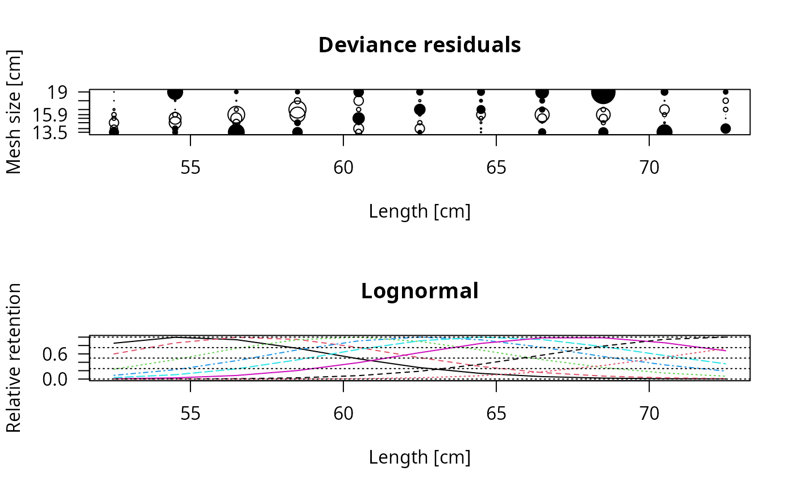
plot(output, plotlens=seq(40,90,0.1))
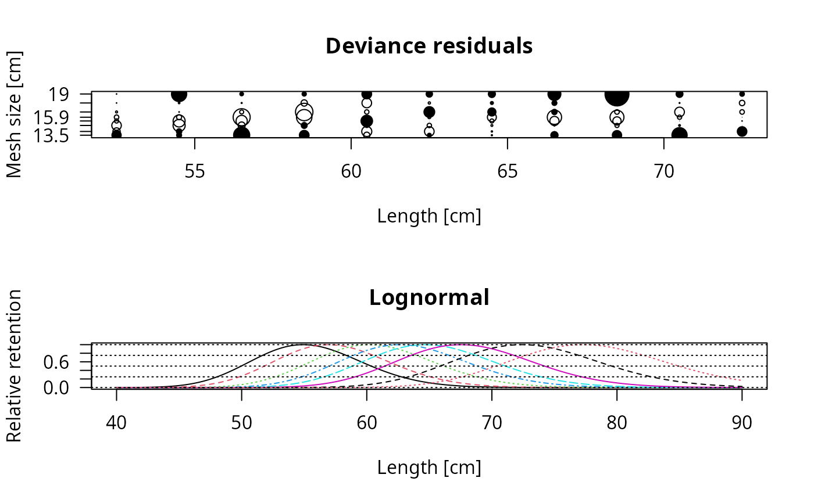
# Use alternate plot settings
output <- select_Millar(gillnet, x0 = NULL, rtype = "lognorm")
 ncolor <- length(output$meshSizes)
plot(output, plotlens=seq(40,90,0.1), deviance_plot = FALSE,
lty=1, col=rainbow(ncolor))
legend("topleft", col=rainbow(ncolor), legend=output$meshSizes,
lty=1, title="Mesh size [cm]")
ncolor <- length(output$meshSizes)
plot(output, plotlens=seq(40,90,0.1), deviance_plot = FALSE,
lty=1, col=rainbow(ncolor))
legend("topleft", col=rainbow(ncolor), legend=output$meshSizes,
lty=1, title="Mesh size [cm]")
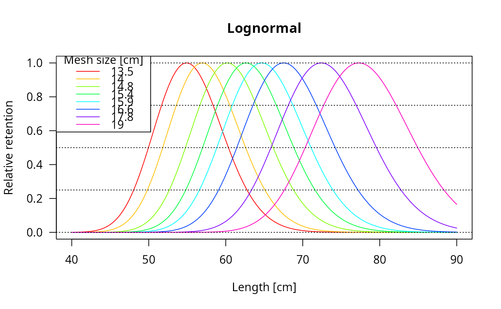
# deviance plot only
plot(output, plotlens=seq(40,90,0.1), selectivity_plot = FALSE)
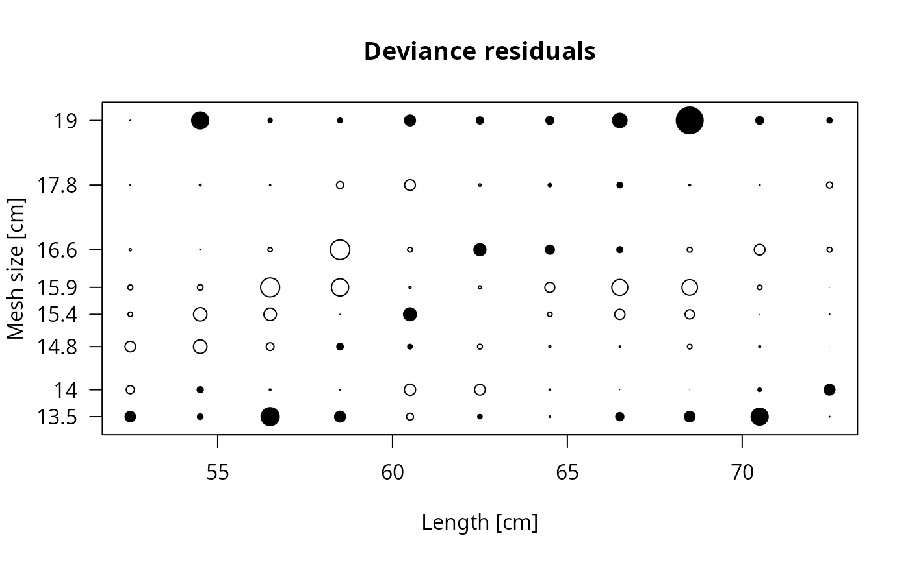
# Stacked trammel net
# The data come from two experiments using different mesh sizes
# This analysis assumes common retention curve in both experiments.
# Note that summary function does not produce residual plot
# since lengths are not unique
data(trammelnet)
output <- select_Millar(trammelnet, x0 = c(25,4),
rtype="norm.loc", rel.power = rep(1,6))
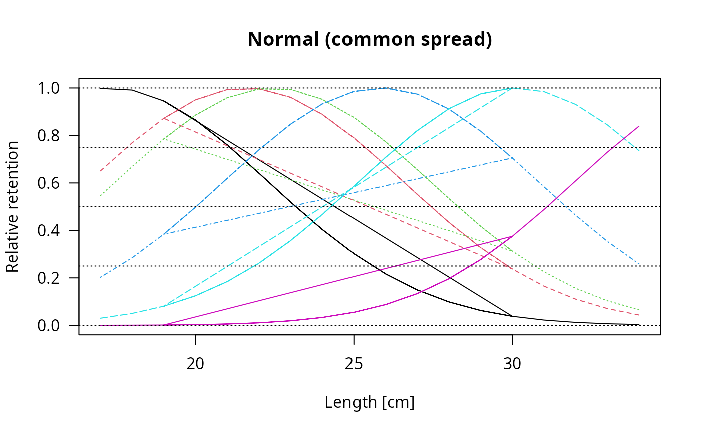
plot(output,plotlens=seq(10,40,0.1))
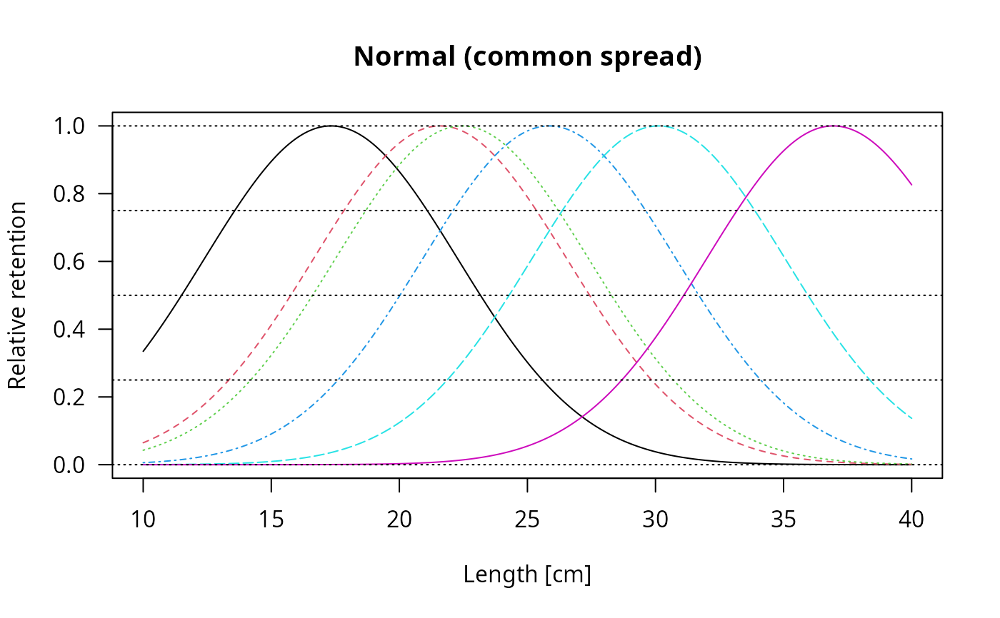